Stock Recruit Covariates
sr_covariates.RmdThere are multiple covariates used in SR JPE modeling that were developed through separate but related processes. There are currently two documents describing covariate selction and processing for different models: (1) Stock Recruit Covariates (this document) and (2) Adult Model Covariates.
The goal of this document is to process covariates for use in SR JPE stock recruitment modeling.
Selecting Stock Recruit Environmental Covariates
FlowWest conducted initial literature review and planning to outline covariates that are expected to be important based on past research. This work can be found here. FlowWest reviewed covariates with the SR JPE Modeling Advisory Team to generate the following environmental covariates table to test within the SR model.
Table 1. Summary of covariates to include in stock recruit modeling based on preliminary literature review.
| Covariate Type | Structure | Rationale |
|---|---|---|
| Temperature | Mean or median degree days | Influence growth rates of juvenile and affect survival |
| Temperature | Day of year when 7DADM drops below or above 13 C | Production will be low if there are high water temperatures during the adult holding and spawning periods |
| Temperature | Mean or median maximum weekly stream temperature | Temperatures above optimal or above a threshold negatively affect fertilization rates and embryo survival |
| Temperature | Emergence date | Emergence date is correlated with temperature and will influence growth rates and survival |
| Temperature | Degree days (20 threshold) upstream passage to spawning | Temperature negatively affects adults as they migrate upstream to spawn |
| Hatchery | Proportion of hatchery on spawning grounds | Hatchery progeny are less fit |
| Disaster | Affected by fire? (0/1) | Wildfire may have impacts on water quality; after a certain period of time or flow these effects may dissipate. Wildfire may also have negative impacts on habitat in terms of temperature. |
| Water year type | Categorical water year type | System level impact on number of juveniles |
| Streamflow | Mean precipitation | Rainfall affects juvenile growth by influencing foraging efficiency or habitat connectivity |
| Streamflow | Maximum monthly precipitation | High rainfall negatively affects egg survival through streambed scour or sedimentation |
| Fecundity | Adult length | Important for fecundity |
| Thiamine deficiency | NA | NA |
| Habitat | Off channel habitat | NA |
| Habitat | Restoration (0/1) | NA |
Preparing Covariates
This document focuses on preparing flow and temperature covariates for use in stock recruit modeling and exploratory analysis.
Temperature
Temperature has been found to influence spawning and rearing. Therefore it is expected to affect the translation from stock to recruit. Temperature can be included in multiple different formats which target different lifestages including:
- Number of degree days
- Day of year when 7DADM is above 13 C
- Maximum weekly stream temperature
- In development: Emergence date (calculated from temperature and spawning date)
Number of degree days
Degree days is defined here as the sum of the daily mean temperatures between August and December (spawning time period) by year and stream.
Note that for streams with multiple locations the max daily mean was selected. Clear Creek 2020 value is low which may be due to a few missing data points in December. This approach is vulnerable to missing data.

Figure 1. Annual sum of daily mean temperatures during spawning and incubation time period (Aug - Dec)
Day of year when 7DADM drops above/below 13 C
This covariate is defined as the day of the year and week when the 7DADM is above 13C
- Data are not filtered to the spawning time period (Aug-Dec) as this threshold is typically met before August
- Below 13C is not included as this does not make sense in terms of impact on salmon. Temperatures are rarely below 13C during the spawning time period and if they are, unlikely to be significantly cold enough to have an impact
- Note, we currently do not have max daily temperatures for the Sacramento so mainstem is not included. There are a few datapoints based on the plot below that are worth further investigation.
Plot of week where threshold is met (above 13 C) for all years and streams
Figure 2. Plot of week where threshold is met (above or below 13) for all years and streams
Max temperature
This covariate is defined as the summarized annual weekly max temperature.
- Summarizes the weekly maximum temperature for each stream (meaning it finds the max across all sites/subsites) across years within the spawning period. Note that the Sacramento River temperature data does not currently include a daily maximum so the weekly max is the max of the daily mean.
- Summarize the weekly max for each stream and year by finding the mean, median, and max.

Figure 3. Plot of mean, median, max of the maximum weekly temperature
Emergence date
In development
Emergence data encompasses the effect of temperature and is expected to affect growth and survival of juveniles. Modeled following Kaylor et al. 2022. Daily Ei values are summed from the spawn date, and emergence is assumed to occur on the first day where Ei exceeds 1.
Ei = 1 / exp [loge a - loge(Ti - b)]
logea = 6.872 b = -0.332 Ti = mean daily temperature Ei = daily contribution to development (ranging from 0 to 1)
Constants derived from Beacham and Murray (1990)
Flow
Precipitation and streamflow have been found to influence spawning and rearing. Therefore it is expected to affect the translation from stock to recruit. Streamflow can be included in multiple different formats including:
- Mean, median, max precipitation (or streamflow)
Mean, median, max flow
These covariates summarize daily max flows as annual mean/median/max/min within the spawning and rearing time period.
Figure 4. Plot of annual summarized (mean, median, max, min) max flows during the spawning and incubation time period (Aug - Dec)

Figure 5. Plot of annual summarized (mean, median, max, min) max flows during the rearing time period (Nov - July)
Combine and Save Covariate Data
All covariate datasets are combined into one table and saved as an
export from the SRJPEdata package. This data can be accessed using
SRJPEdata::stock_recruit_covariates and can be joined to
the SRJPEdata::site_lookup table in order to fill in
covariates for each site and year.
The first 10 rows of SRJPEdata::stock_recruit_covariates
are shown below.
| year | stream | gage_agency | gage_number | site_group | lifestage | covariate_type | stream_site | covariate_structure | value |
|---|---|---|---|---|---|---|---|---|---|
| 1999 | deer creek | CDEC | DCV | deer creek | spawning and incubation | temperature | deer creek deer creek | gdd_spawn | 2081.75842 |
| 1999 | deer creek | CDEC | DCV | deer creek | spawning and incubation | temperature | deer creek deer creek | weekly_max_temp_max | 23.50000 |
| 1999 | deer creek | CDEC | DCV | deer creek | spawning and incubation | temperature | deer creek deer creek | weekly_max_temp_mean | 15.03865 |
| 1999 | deer creek | CDEC | DCV | deer creek | spawning and incubation | temperature | deer creek deer creek | weekly_max_temp_median | 14.27778 |
| 1999 | mill creek | CDEC | MLM | mill creek | spawning and incubation | temperature | mill creek mill creek | gdd_spawn | 1965.18097 |
| 1999 | mill creek | CDEC | MLM | mill creek | spawning and incubation | temperature | mill creek mill creek | weekly_max_temp_max | 23.38889 |
| 1999 | mill creek | CDEC | MLM | mill creek | spawning and incubation | temperature | mill creek mill creek | weekly_max_temp_mean | 15.38636 |
| 1999 | mill creek | CDEC | MLM | mill creek | spawning and incubation | temperature | mill creek mill creek | weekly_max_temp_median | 15.36111 |
| 2000 | butte creek | CDEC | BCK | butte creek | spawning and incubation | temperature | butte creek butte creek | gdd_spawn | 1930.34531 |
| 2000 | butte creek | CDEC | BCK | butte creek | spawning and incubation | temperature | butte creek butte creek | weekly_max_temp_max | 25.27778 |